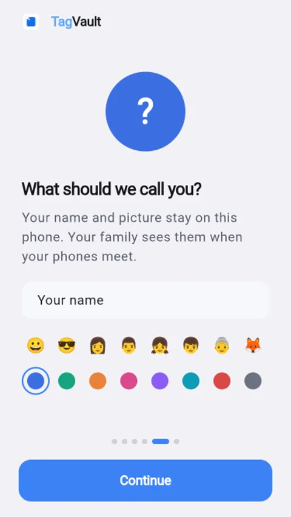
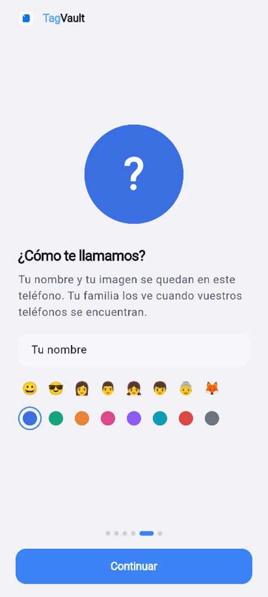
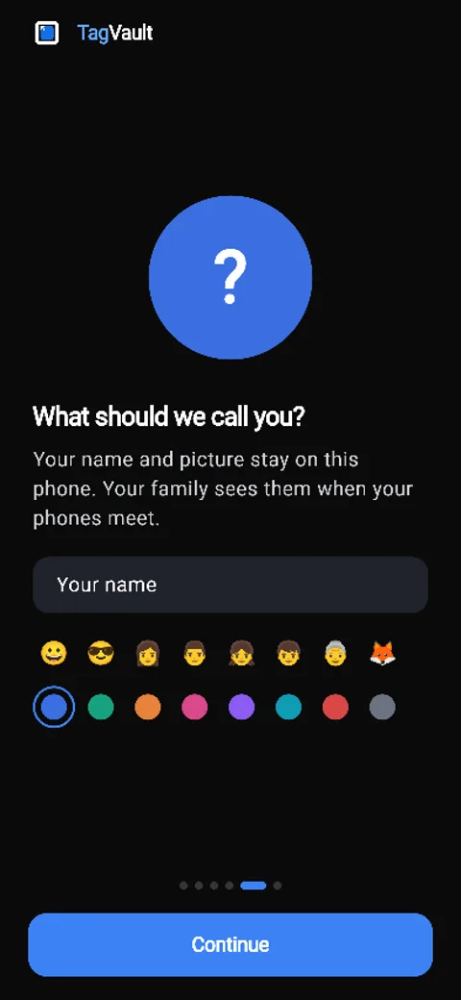
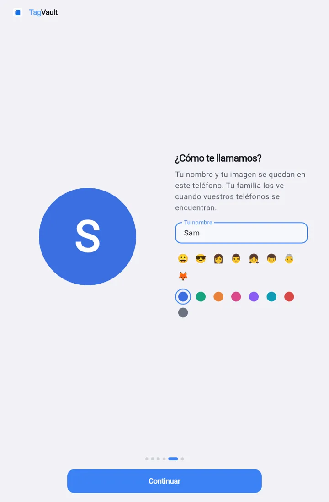
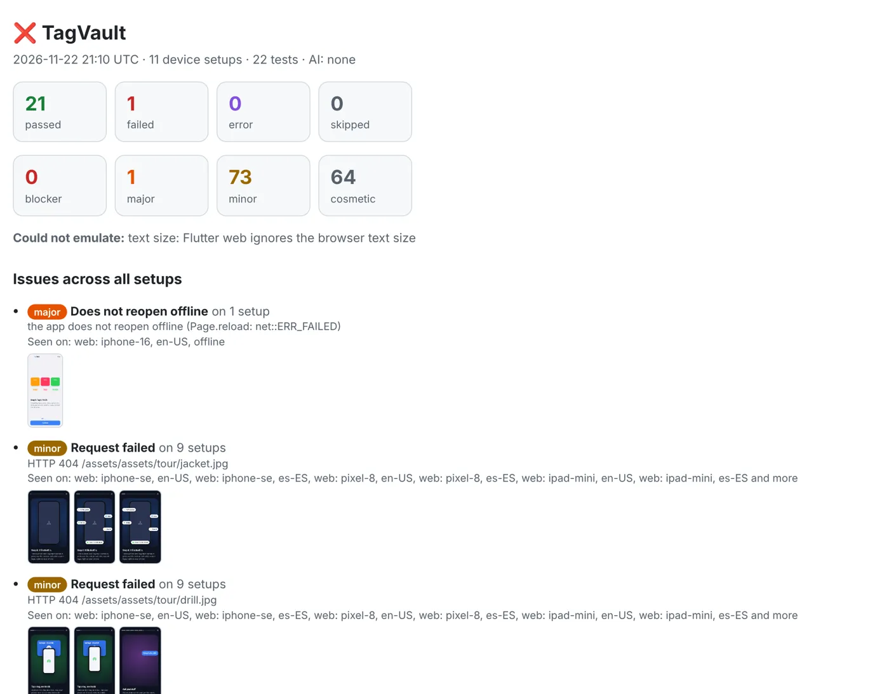

One qa.yml runs your app on every device, language, orientation, network, theme and text size. Write a few steps, or let an AI tester explore like a new user. You get every screenshot in one report, in your CI and in your inbox.
pip install "testflock[web,ai] @ git+https://github.com/kanumuri9593/testflock"



TagVault's web build, 11 device setups, a scripted onboarding test and a free crawl on each. No AI and no key. Real numbers from that run:
device setups: 3 phones and a tablet, English and Spanish, offline, slow 3G, dark, landscape, largest text
tests passed. The one failure is real: the web build can't reopen offline
tour photos the app asks for but never shipped, found on 9 setups
no-AI mode on a Linux machine, about 10 minutes from start to report
Each line of the matrix is one axis. Testflock runs every combination, minus the ones you exclude, plus the odd ones you add by hand. A cap stops a typo from booking 400 phones.
# qa.yml name: TagVault app: web: {serve: build/web} android: {package: com.example.app, apk: app.apk} ios: {app: Runner.app} matrix: platforms: [web, android, ios] devices: {web: [iphone-se, pixel-8, ipad-mini]} locales: [en-US, es-ES] networks: [online, offline] themes: [light, dark] exclude: [{network: offline, theme: dark}] max_cells: 24 tests: - name: Add a first item steps: - tap: "Add" - type: {into: "Name", text: "Spare keys"} - relaunch: true - expect: "Spare keys" - name: Explore like a new user agent: {goal: "Add an item and find it again"} notify: email: {to: [you@example.com]}
Tap, type, scroll, expect, relaunch, go offline mid-test. Controls are found by their accessibility label, so one script runs on web, Android and iOS. If it can't find a button, VoiceOver probably can't either.
- tap: "Add"
- network: offline
- expect: {not: "Error"}Taps every safe control, screen by screen, and checks each one. It never taps delete, sign out, buy or send. It finds crashes, dead ends, missing files and layout problems, with no key and no cost.
- crawl: {max_actions: 30}Plays a persona with a goal, reads each screenshot, taps by number and reports issues as it goes. It ends with a score out of 10. With AI off, agent tests quietly run as the crawler instead.
agent: persona: "Busy parent, large text" goal: "Find the passport"
On every screen, automatic checks look for crashes and uncaught errors, content wider than the screen, failed requests, controls with no label, touch targets under 44 pt / 48 dp, and controls placed off screen.
Anything a platform can't emulate is listed in the report under "Could not emulate". It is never skipped silently.
| Web | Android | iOS | |
|---|---|---|---|
| Runs on | Playwright Chromium, any OS | Emulator or USB phone (adb) | Simulator on a Mac (simctl + AXe) |
| Screen | 11 presets, touch and phone user agent | Emulator profiles | Any Simulator device |
| Language | Locale, timezone, location | System locale (rooted image) | Language and region |
| Network | Offline and throttled per test | Airplane mode, speed and delay on emulators | Shares the Mac's network* |
| Theme, text | Dark mode, root font size** | Dark mode, font scale up to 2.0 | Dark mode, Dynamic Type up to the largest |
| Extras | Console and network errors, sideways scroll | Crash buffer, permissions | Clean 9:41 status bar, permissions |
* Slow and offline iOS runs need Apple's Network Link Conditioner, which slows the whole Mac. ** Flutter web draws on a canvas and ignores the browser's text size. Testflock switches on Flutter's accessibility tree, so scripts still find every button.
The same problem on nine setups shows once, with where it happened and screenshots. The run also writes JSON for tools, JUnit for your CI's test tab and a Markdown summary for the pull request.
Seen on iPhone 16, offline
Seen on 9 setups
Seen on 6 setups

The GitHub Action splits the setups across parallel jobs, merges one report and sends it by email, Slack, Discord or Teams. Ready workflows cover web on Linux, Android emulators on Linux, and iOS on your own Mac as a free runner.
Any SMTP server, Gmail app passwords included, or Resend. The report goes as a zip, or as a link to the run when it's large.
fail_on: [blocker, major] decides what breaks the build. notify.when: failure keeps your inbox quiet on green runs.
testflock run --shard 2/4, then testflock merge. It's one command on any machine.
# .github/workflows/qa.yml jobs: test: runs-on: ubuntu-latest strategy: matrix: {shard: [1/4, 2/4, 3/4, 4/4]} steps: - uses: actions/checkout@v4 - run: flutter build web --no-web-resources-cdn - uses: kanumuri9593/testflock@main with: args: --shard ${{ matrix.shard }} env: ANTHROPIC_API_KEY: ${{ secrets.ANTHROPIC_API_KEY }} report: needs: test steps: - run: testflock merge shards --notify
Testflock never holds a key of its own. Secrets come from environment variables or CI secrets, never from qa.yml.
| ai.provider | Who pays | Setup |
|---|---|---|
| none | Nobody | Default. Scripts, the crawler and every automatic check |
| anthropic | Your Anthropic key | ANTHROPIC_API_KEY. Pick any Claude model; Haiku costs least |
| anthropic + base_url | That provider | Any Anthropic-compatible API: a gateway, OpenRouter, a proxy |
| claude-code | Your Claude subscription | The claude CLI, or CLAUDE_CODE_OAUTH_TOKEN in CI |
Testflock was inspired by mobile-agent-testers by Pierre Raffalli (MIT): AI testers, each playing a persona on its own simulator. We wrote Testflock from scratch and added web, scripted tests, network and orientation emulation, a no-AI mode, and reports by email.